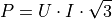
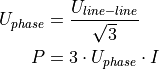
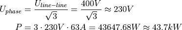
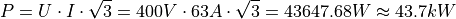

1.2. Power
1.2.1. Single Phase Power
1.2.2. Three Phase Power
Power Factor (PF) needs to be accounted for:
PF = 1:

PF less than 1:
Another approach is to find the phase voltage (using the line to line voltage), and then finding the power with 3 times the phase voltage (assuming PF = 1):

1.2.2.1. Calculation Examples
Below are examples of calculating three phase power with 400V line to line voltage and 63A of current (assuming PF = 1):
1.2.2.1.1. Example 1

1.2.2.1.2. Example 2
